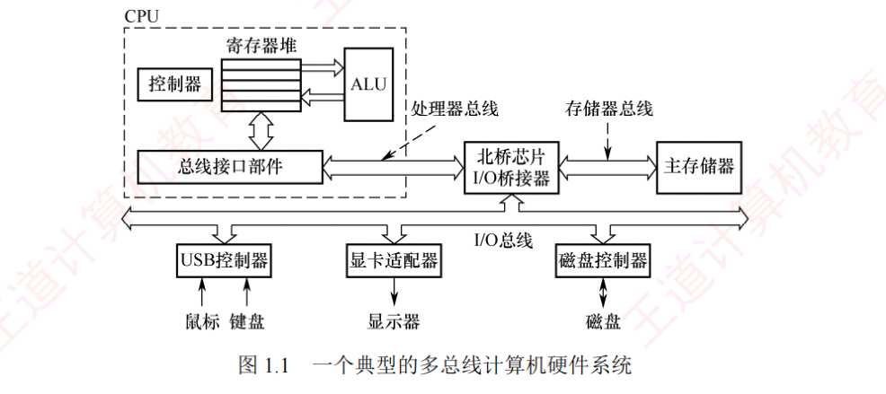
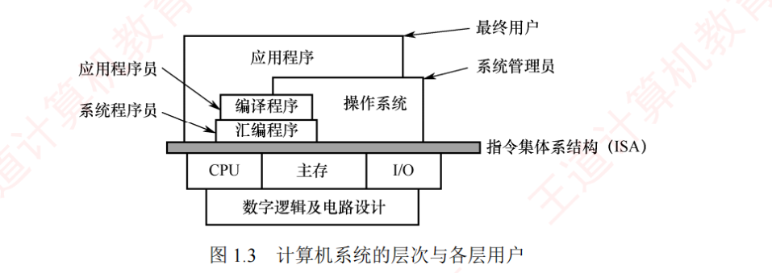

← 返回 408 复盘中心
怎么读这一页： 正文是书上的内容，我只做了结构重排和取舍 。色块分两个维度——① 按来源：
必记结论 （书上的考点句）、
我的补讲 、
陷阱 。② 按动作（这一版新加的两种）：
背景 · 考试不碰 ——虚线灰块，明确告诉你哪几段可以快速划过 （全是重点＝没有重点）；
知识串联 ——绿块，就地标出这里和后面哪一章、和 OS／网络哪个概念是同一件事 。📄 p.N 点开跳到原书对应页；紫色 考点追踪 是王道标注的真题年份。
本章从原书只裁了 2 张关系图 （图 1.1 多总线硬件系统、图 1.3 层次与各层用户）——其余的"图"本质都是层次表和流程条，改写成可搜索的表格比裁图有用 。另：本页凡写"复算""实测"的数字，都是我在做这 36 道题时用 Python 真算过的 ，不是抄书。
📄 p.1
本章定位
考纲内容 ：（一）计算机系统层次结构 ——计算机系统的基本组成；计算机硬件的基本组成；计算机软件和硬件的关系；计算机系统的工作原理：“存储程序”的方式、高级语言程序与机器语言程序的转换、程序和指令的执行过程。（二）计算机性能指标 ——吞吐量；响应时间；CPU 时钟周期；主频；CPI；CPU 执行时间；MIPS；MFLOPS；GFLOPS；TFLOPS；PFLOPS；EFLOPS；ZFLOPS。
王道的复习提示 ：本章旨在建立对计算机系统整体结构与核心概念的初步认识，其中涉及的基本原理与性能指标，是理解后续章节的基础 。初学时若对某些概念理解尚浅，无须过度担忧；随着课程深入，这些知识将在具体上下文中逐渐明晰。书上开篇留了三个问题，答案在 1.4：① 主频高的 CPU 一定比主频低的性能更高吗？② 翻译程序、汇编程序、编译程序与解释程序有何区别？③ 不同级别的语言编写的程序有何差异？哪一类可被硬件直接执行？
我的补讲 · 这一章的重量与打法（先看这一段再往下读）
19 页，是组原全书最薄的一章 （对比：ch5 CPU 79 页、ch3 存储 71 页）。但它的地位不是"薄"能概括的——
① 它是全书唯一一章"纯送分"。 36 道课后题里 13 道是统考真题，跨 2010–2023 十四年，
几乎年年考，且几乎全是能秒杀的题 。性能指标那几个公式一旦背熟，考场上这 2 分是白送的。
② 它是全书的"名词地基"。 后面六章所有的名词——数据通路、控制单元、主存、Cache、I/O 接口、总线、ISA、微架构——
全部在本章第一次出场并被定义 。这一章读囫囵，后面每一章都会有几个词卡着。
③ 它埋了全书唯一贯穿到底的一根线：三要素公式。
CPU 执行时间 =（指令条数 × CPI）÷ 主频
第 4 章 CISC/RISC 之争、第 5 章流水线、第 3 章 Cache，讲的都是"动这三个因子里的哪一个"。
怎么读： 1.1 发展历程
整节划过 （带
*，非统考内容，只留"机器字长"一个定义）；1.2 要
把名词和后面的章号对上 ；
1.3 是本章唯一需要动笔的地方 ——五个公式要写到不用想。
配套动手 ：
练习系统第 1 章 36 题 （每题带 Python 复算）、
计算模板手册 ch1 条目 。
*1.1 计算机发展历程
📄 p.1–2
背景 · 考试不碰（整节 1.1 都是）
书上给这一节标了 *，意思是「非统考大纲要求内容或已从统考大纲中删除，仅供学习参考」。
也就是说，下面这张四代表、摩尔定律、Intel 型号演进，统考不会考 ，扫一眼有个印象即可，不要花时间背年份。四代变化 （按逻辑元件划代）：一代 1946—1957 电子管 （主存＝延迟线/磁鼓，机器语言）；二代 1958—1964 晶体管 （主存＝磁芯，出现高级语言及编译程序、操作系统雏形）；三代 1965—1971 中小规模集成电路 （半导体存储器取代磁芯，出现分时操作系统）；四代 1972—至今 大规模/超大规模集成电路 （微处理器诞生，并行处理、流水线、高速缓存、虚拟存储器广泛应用）。摩尔定律 ：价格不变前提下，集成电路上可容纳的晶体管数量约每 18 个月翻一番 。微处理器演进 ：1971 Intel 4004 → 8008(8 位) → 8086(16 位) → Pentium(32 位) → Core i7(64 位)。软件线 ：机器语言/汇编 → 高级语言（FORTRAN 科学计算、Pascal 结构化、C++ 面向对象、Java 跨平台）；系统软件以 OS 为代表（Windows、UNIX、Linux）。
必记结论 · 整节 1.1 只有这一个定义要拿走
上面说的“32 位、64 位”，指的是 机器字长（简称字长）＝ CPU 通用寄存器的宽度 。它决定两件事：单次整数运算可处理的数据位数 ；② 可直接寻址的内存空间大小 。
挖 · 「机器字长」这个定义为什么值钱
书上说 ：字长 = CPU 通用寄存器的宽度，决定运算位数与可寻址空间。潜台词是 ：字长是「CPU 内部一次能端多少水」 ，它不描述 内存条多大、也不描述 数据总线多宽、更不描述 跑得多快。这三个量在后面会分别以「主存容量」「数据总线宽度」「主频」的名义出现，命题人最爱把它们和字长混在一起问 。所以能考 ：课后题 1.3-08 「机器字长与下列哪个指标最密切相关」——答案是运算精度 （位数越多，定点数/浮点数能表示和运算的精度越高），而不是运算速度、存取速度、内存容量。「能寻址多少」≠「实际装了多少」，这是这道题唯一的坎。
串 · 「字长」这个词在后面会分裂成好几个
→ ch2 数据的表示：字长决定定点数的表示范围 与溢出判断（8 位补码只能表示 −128~127）。→ ch3 存储系统：存储字长 （一个存储单元的位数）是另一个概念，它和机器字长可以不等 ；主存按字节编址还是按字编址，直接影响地址位数的计算。→ ch4 指令系统：指令字长 又是一个（一条指令占多少位），与机器字长的倍数关系决定了取指要访存几次。→ ch6 总线：数据总线宽度 决定一次并行传输多少位，与字长常常相等但不是同一回事 。⚠️ 一共四个「字长」，从现在起每见到一个就标清是哪一个 ——这是组原前三章最常见的暗错源。
1.2 计算机系统层次结构
1.2.1 计算机系统的组成
📄 p.2
一个完整的计算机系统由硬件 与软件 组成。硬件指有形的物理装置，即计算机系统中的各类物理部件；软件则是在硬件上运行的程序及其相关的数据与文档。
必记结论 · 软硬件功能边界
计算机系统的实际性能，在很大程度上取决于软件对硬件资源的利用效率 ，而该效率的实现依赖于硬件所提供的能力。因此，计算机系统设计必须合理划分软硬件的功能边界 。一般而言，对于使用频繁且硬件实现成本较低 的功能，宜由硬件实现，以显著提升整体效率。
挖 · 「完整的计算机系统」这句话是一道选择题的题干
书上说 ：完整的计算机系统 = 硬件 + 软件。潜台词是 ：命题人会拿三层套娃 来骗你，看你能不能分清每层的边界：CPU（运算器+控制器） ⊂ 主机（CPU+主存） ⊂ 硬件 ⊂ 计算机系统（硬件+软件） 所以能考 ：课后题 1.2-01 四个选项分别停在不同的套娃层——「运算器/存储器/控制器」停在最内层、「外部设备和主机」只覆盖硬件、「主机和应用程序」漏掉系统软件，只有「配套的硬件设备和软件系统」把两半都说全。注意「应用程序」≠「软件」：软件 = 系统软件 + 应用软件，少了系统软件机器根本跑不起来。
1.2.2 计算机硬件
📄 p.3–4
考点追踪：冯·诺依曼机的特点（2019）
冯·诺依曼在研究 EDVAC 机时首次提出了“存储程序” 的思想，奠定了现代计算机的基本结构。基于这一思想的计算机统称为冯·诺依曼机。
必记结论 · 冯·诺依曼机五大特点（原文级，要能背出）
采用“存储程序” 的工作方式：将编制好的程序和初始数据预先存入主存储器 ，计算机启动后能自动、连续地取指并执行 ，直至程序结束，无须人工干预 。
硬件系统由运算器、控制器、存储器、输入设备和输出设备 五大部件组成。
指令和数据在存储器中以相同形式存放，仅凭内容无法区分 ，但计算机应能识别它们。
指令和数据均采用二进制编码 表示。
指令由操作码和地址码 组成，其中操作码指明操作类型，地址码指出操作数的地址 。
挖 · 第 5 条里那个「地址」是 2019 真题的唯一考点
书上说 ：地址码指出操作数的地址 。潜台词是 ：指令里放的是「数据在哪」 而不是「数据是多少」 。唯一的例外是立即寻址 ——那时指令里才直接放数值，而且只能放很小的常数。所以能考 ：2019 真题（1.2-13） 选项 C「指令按地址访问，数据都在指令中直接给出 」——错就错在这个「都」字，它把唯一的特例说成了通例。凡见到冯·诺依曼相关的选项里出现「数据在指令中给出」，先问一句：那不就只剩立即寻址了吗？
挖 · 第 3 条「形式上无差别」，那计算机到底怎么区分指令和数据？
书上说 ：指令和数据以相同形式存放、仅凭内容无法区分，但计算机应能识别它们 。书上到这里就停了，没说怎么识别——这一句是全章最容易读过去的坑。潜台词是 ：区分它们的不是内容，是时机 ——取指周期取出来的当指令，执行周期取出来的当数据 。同一串 0/1，在不同的机器周期被取出，含义完全不同。所以能考 ：① 2019 真题 选项 B「指令和数据都用二进制数表示，形式上无差别」是对的 ，别手滑划掉；② 这句话在第 5 章 会变成「CPU 如何根据机器周期标志区分本次访存取的是指令还是数据」的正面考点。
计算机的功能部件
现代计算机将运算器、控制器和各类寄存器高度集成，形成一块称为中央处理器（CPU） 的芯片。完整的计算机硬件系统主要包含：中央处理器、存储器、输入/输出控制器、外部设备，以及用于协调这些部件协同工作的总线 。
部件 书上的定义（考点句） 中央处理器 负责指令执行的核心部件。传统基本组成为运算器和控制器 ；现代处理器架构中，这两部分被系统地组织为数据通路与控制单元 。 数据通路 执行实际运算的硬件通路，核心包括算术逻辑单元（ALU）和通用寄存器组 。ALU 负责完成所有算术与逻辑运算；通用寄存器组为 ALU 提供操作数并暂存运算结果，是实现高速数据访问的关键。此外还包含多路选择器、内部互连通路等。 控制单元 负责协调整个 CPU 的工作。它从存储器中取出指令并译码，随后根据指令语义生成一系列精确的控制信号，指挥数据通路中的各部件（例如选择源寄存器、配置 ALU 功能、启动运算并在正确时序下完成结果写回），从而确保指令有序、高效地执行。 存储器 按访问特性分为内存与外存 。现代内存由主存和高速缓存（Cache） 组成；但由于 Cache 是后期引入的，传统上“内存”仅指主存 。在冯·诺依曼结构中，主存作为核心的工作存储器 ，用于存放待执行的程序和数据。外存包括两类：一是可与主存交换数据的磁盘、固态硬盘等，二是用于长期备份的海量存储设备（磁带、光盘等）。 外部设备和 外部设备简称外设，也称 I/O 设备。外设通常由物理功能部件 （如打印头、鼠标滚轮或按键等）和设备控制器 组成，二者在功能或物理实现上往往相互分离：前者负责实际的输入/输出操作，后者则负责与主机通信并控制前者的工作。外设通过设备控制器连接到主机上，各种设备控制器统称 I/O 控制器 或 I/O 接口 （键盘接口、显示控制器＝显卡、网络控制器＝网卡等）。 总线 计算机中用于在各个部件之间传输信息的公共通路 。CPU、主存和 I/O 接口通过总线互连；其中，CPU 和 I/O 接口内部均包含寄存器，部分还集成了高速缓存 。

图 1.1 一个典型的多总线计算机硬件系统（裁自王道 p.4）——CPU 通过处理器总线 经 I/O 桥接器与主存和 I/O 设备通信；主存通过存储器总线 经 I/O 桥接器与 CPU 和 I/O 设备相连；各类 I/O 设备通过其控制器（USB 控制器、显卡适配器、磁盘控制器）接入 I/O 总线 。
必记结论 · 按功能给图 1.1 里的部件归类
数据处理部件 ：ALU。 存储部件 ：主存和磁盘（分别承担临时存储与长期存储任务）。互连结构 ：所有总线、桥接器、接口及控制器共同构成，负责全系统的数据传输与协调。
挖 · 图 1.1 里最该记住的不是框，是「三条总线不是一条」
书上说 ：处理器总线、存储器总线、I/O 总线，中间靠北桥芯片（I/O 桥接器） 连接。潜台词是 ：不同速度的设备不能挂在同一条线上 ——CPU 快、主存中等、磁盘和键盘极慢。若共用一条总线，整条线会被最慢的设备拖死。桥接器的作用就是做速度和协议的隔离与转换 。所以能考 ：第 6 章总线 会正面考「为什么要分总线」「桥接器的作用」，以及各条总线的带宽计算。现在先把这张图的三条线记牢，第 6 章会省一半力气。
挖 · 「Cache 是后期引入的，传统上内存仅指主存」——这句闲话是有用的
书上说 ：现代内存 = 主存 + Cache，但传统上“内存”仅指主存；在冯·诺依曼结构中，主存作为核心的工作存储器 。潜台词是 ：冯·诺依曼模型里根本没有 Cache 。Cache 是后来为了填补「CPU 快、主存慢」这条鸿沟硬加进去的，它对程序员是透明的 （见 1.5 的透明性）。所以能考 ：第 3 章 凡问「Cache 对谁透明」「Cache 是否属于主存」「有 Cache 后 CPU 的访存地址是主存地址还是 Cache 地址」，答案都来自这句话——Cache 只是主存的一面镜子，CPU 给出的永远是主存地址 。
串 · 🔑 跨科枢纽「局部性原理 + 空间换时间」的起点就在这一句
书上这里只轻描淡写地说了句「现代内存由主存和高速缓存（Cache）组成」，但 Cache 为什么存在、凭什么有用，靠的是一条贯穿 408 四科的原理——局部性原理 （时间局部性：刚访问过的还会再访问；空间局部性：访问了某处，附近的也快被访问）。它在四科里各露一次面：→ ch3 Cache ：把最近用过的主存块留在快存储器里（时间局部性）；一次搬一整块而不是一个字 （空间局部性）。→ ch3 磁盘预读 / 多模块交叉存取 ：也是赌"接下来要读的就在旁边"。→ OS 页面置换算法（LRU） ：LRU 之所以好用，正因为时间局部性；工作集 模型是它的量化版。→ OS 快表 TLB ：把最近用过的页表项缓存起来——和 Cache 是同一个手法。→ 网络 ARP 缓存 / DNS 缓存 ：同样是"刚查过的地址先留着"。再抽象一层，它们全都是同一招：「空间换时间」 ——多花一块存储，换少走一次慢路径。
这一招在四科里出现的次数比任何一个具体算法都多，值得单独当一条主线记。
串 · 🔑 跨科枢纽「中断」：本章只给了 I/O 接口这个名字，它后面会变成三章的主角
书上这里说「外设通过设备控制器连接到主机，各种设备控制器统称 I/O 控制器或 I/O 接口」。但没说 CPU 和这些慢速设备怎么打交道 ——那就是「中断」，408 里最重要的跨科枢纽之一 ：→ ch7 组原 · I/O 方式三选一 ：程序查询（CPU 死等）→ 程序中断（设备好了再叫 CPU）→ DMA（连叫都不用叫，直接搬）。→ ch5 组原 · 异常和中断机制 ：中断隐指令做哪三件事、中断响应的时机（一条指令执行结束后 ）。→ OS OS 的一切都由中断驱动 ：时钟中断触发进程调度、系统调用是"自愿中断"（访管指令）、用户态→核心态的唯一 入口就是中断。⟹ 组原讲"中断在硬件上怎么实现"，OS 讲"中断被用来做什么"。同一件事的两面，两科都考。
串 · 五大部件 → 后面六章的章节地图（本章最值钱的一张表）
冯·诺依曼的五大部件不是历史名词，它就是
组原这本书的目录 ：
冯·诺依曼部件 本书哪一章展开 那一章的核心问题 运算器 ch2 数据的表示和运算数怎么编码、加减乘除电路怎么做、怎么判溢出 存储器 ch3 存储系统层次结构、Cache 三种映射、虚拟存储 控制器 ch5 中央处理器数据通路、指令周期、微程序、流水线 （指令本身） ch4 指令系统指令格式、寻址方式 —— 即本章说的 ISA 输入/输出设备 ch7 输入输出系统I/O 接口、中断、DMA （连接一切的） ch6 总线总线结构、定时、带宽计算
⟹ 本章 1.2.2 一节里出现的每一个名词，后面都有一整章在等它。 读到陌生词不必慌，但要知道它归哪一章管。
1.2.3 计算机软件
📄 p.4
必记结论 · 系统软件 vs 应用软件
系统软件 ：一组保障计算机系统高效、正确运行的基础软件，用于管理和调度系统资源，为用户及应用程序提供基础服务。典型包括：操作系统(OS)、数据库管理系统(DBMS)、语言处理程序、网络与分布式软件系统、标准库程序、服务性程序 。应用软件 ：用户为解决特定应用领域问题而开发的程序，例如科学计算、工程设计、数据统计与信息处理等领域的专用软件。
必记结论 · 软/硬件逻辑功能的等价性
对于某一特定功能，既可采用硬件实现，又可通过软件实现；从用户视角看，在相同规范下，二者在逻辑功能上是等价的 。例 ：浮点运算既可由专用浮点运算器硬件实现，又可通过软件子程序模拟；在相同输入和数值规范（如 IEEE 754）下，二者产生一致的数值结果，但硬件实现的效率通常远高于软件 。地位 ：软/硬件逻辑功能的等价性是计算机系统设计的重要依据 ；如何合理划分软/硬件的功能边界，是计算机体系结构研究的核心问题之一 。
挖 · 「等价性」这三个字撑起了整个学科的合法性
书上说 ：同一功能软硬件都能实现，逻辑上等价，但硬件更快。潜台词是 ：既然功能上都行，那「什么该做进硬件」就变成了一道纯粹的成本/收益题 ——判据书上已经给了：使用频繁 + 硬件实现成本低 ⟹ 做进硬件 。所以能考 ：第 4 章 CISC vs RISC 就是这道题的最大规模答卷——CISC 主张「常用操作都做成硬件指令」，RISC 主张「只保留最基本的，复杂的交给软件组合」。本章这段话是那场争论的裁判规则，读 ch4 时回头看它会很有感觉。
串 · 「软件模拟硬件」在四科里各出现一次
→ ch2 没有浮点运算器的机器，用软件模拟 IEEE 754 （本节的例子）。→ ch5 微程序控制器 ：用「存在控存里的微指令序列」去模拟硬布线电路的行为——又一次用"软"的方式实现"硬"的功能。→ OS 虚拟机 ：操作系统用软件把裸机包装成"有文件、有进程"的扩展机器（正是 1.2.4 说的操作系统虚拟机层）。→ 网络 协议分层 ：每一层都用软件在下层服务之上"模拟"出一个更好用的抽象通道。⟹「用一层的软件造出下一层看起来是硬件的东西」是整个 408 的通用手法，不是组原独有的。
1.2.4 计算机系统的层次结构
📄 p.4–6
计算机系统采用多级层次结构，通过逐层抽象 隔离复杂的硬件实现与高层应用需求。从用户的应用问题到物理器件，每层都向上提供简洁的接口，向下依赖更底层的功能实现 。这种分层设计不仅明确了软/硬件的职责边界，还使系统开发和维护得以并行高效进行。
图 1.2 的七层（自上而下） ——原书是框图，这里改写成可搜索的表：
归属 层 面向的人 / 这一层在干什么 软件 应用（问题） 最终用户 ——要解决的实际问题算法与编程 程序员 ——把问题抽象成正确的算法，再用编程语言写成程序操作系统 / 虚拟机 程序员 ——OS 把硬件及其底层结构抽象掉，构建出一台可供程序员使用的虚拟机软 / 硬 指令集体系结构（ISA） 架构师 ——软/硬件之间的关键接口，软件可见的全部硬件功能 硬件 微体系结构 架构师 ——处理器内部的硬件组织方式，实现 ISA 定义的功能功能部件 / RTL 电子工程师 电路与器件 电子工程师
陷阱 · 操作系统在汇编语言的「下面」，不是上面
课后题 1.2-05 问「自上而下的典型层次」，标准答案是
高级语言虚拟机 → 汇编语言虚拟机 → 操作系统虚拟机 → 机器语言机器 。为什么 OS 在汇编之下？ 因为汇编程序本身也是跑在操作系统上的 ——你写的汇编要靠系统调用才能读文件、才能输出。OS 提供的是「扩展的机器」，它比汇编更接近硬件、比 ISA 更远离硬件 ，所以夹在中间。⚠️ 别把这个顺序和"谁调用谁"搞反 ：上层调用下层，所以上层更抽象 、下层更具体 。
1．算法和编程
考点追踪：三种编程语言的特点（2015、2024）
必记结论 · 三种语言，只有一种能被硬件直接执行
编程语言分两类 ：
高级语言独立于计算机底层硬件结构 ，是主流软件开发语言；
低级语言则紧密依赖机器结构 ，特指机器语言及其符号化形式——汇编语言。
机器语言 （又称二进制代码语言）：由 0 和 1 组成的指令序列。程序员需要熟记每条指令的二进制编码。它是计算机唯一能直接识别和执行的语言。 汇编语言 ：采用英文助记符（如 mov、add）或其缩写代替二进制指令，显著提升了可读性与记忆性。但汇编程序不能被硬件直接执行 ，必须通过一个称为汇编程序 的系统软件的翻译，将其转换为机器语言程序后，才能在计算机上运行。高级语言 （C、C++、Java）：允许程序员以接近自然语言的方式描述问题求解过程，极大提高了开发效率。高级语言程序通常需经编译程序处理：或先编译为汇编语言，再经汇编生成机器语言；或直接编译为目标机器的机器语言程序。
挖 · 「一一对应」和「能直接执行」是两件事，考场上最爱把它们焊在一起
书上说 ：汇编语言是机器语言的符号化形式；汇编程序不能被硬件直接执行。潜台词是 ：汇编指令 ↔ 机器指令确实一一对应 （语义层面，ADD AX,BX 就是那串二进制的另一种写法），但硬件译码器读的是二进制位，读不了 ASCII 文本 （物理层面）。对应关系为真，执行能力为假 。所以能考 ：课后题 1.2-10 「汇编指令和机器指令都能被计算机直接执行」——错；同题的 D「汇编指令和机器指令一一对应，功能相同」——对 。两个选项说的是同一对概念的两个不同侧面，能分开就能拿分。
挖 · 2015 真题里那个「硬件描述语言」是个圈套
书上没说 硬件描述语言，但 2015 真题（1.2-11） 把它塞进了选项：「计算机硬件能够直接执行的是：Ⅰ 机器语言程序、Ⅱ 汇编语言程序、Ⅲ 硬件描述语言程序」。潜台词是 ：很多人一看「硬件描述语言」里有"硬件"两个字，就默认它和硬件亲近、能被执行——正好相反 。HDL（Verilog / VHDL）是用来描述「电路长什么样」的语言 ，它的归宿是被综合工具变成门级网表再变成实际电路：它生产硬件，而不是运行在硬件上。 所以能考 ：答案是仅 Ⅰ 。一句话记死：能被硬件直接执行的语言，古往今来只有机器语言一种。 这条在 1.2-10、1.4 本章小结第 3 问里被反复问，属于必拿分。
考点追踪：各种翻译程序的概念（2016）
必记结论 · 翻译程序的三个儿子
高级语言源程序必须转换为机器语言程序才能被计算机直接执行，用于完成该转换的系统软件称为
翻译程序 ，转换后生成的程序称为
目标程序 。翻译程序主要分为以下三类：
汇编程序（汇编器） ：将汇编语言 源程序翻译为机器语言目标程序。解释程序（解释器） ：逐条翻译并立即执行 高级语言源程序语句，不生成独立的目标程序 。编译程序（编译器） ：将高级语言源程序一次性翻译 为汇编语言或机器语言目标程序。
挖 · 把三个动词的「起点 → 终点」画出来，四道题一起解决
书上说 ：三类翻译程序各有分工。但书是按"程序"列的，题是按"过程"问的 ，要自己转成动词：
编译：高级语言 ──▶ 汇编语言 / 机器语言 （一次性全译，生成 目标程序）不生成 目标程序）
潜台词是 ：三个动词的输入类型两两不同 ，这就是所有题的判据。所以能考 ：① 2016 真题（1.2-12） 「将高级语言源程序 转换为机器级目标代码文件 」——「高级语言」排除汇编程序，「目标代码文件」排除解释程序，「源程序」排除链接程序（它吃的是 .o），只剩编译程序；② 课后题 1.2-08 第二空「把汇编语言源程序转换为机器语言程序的过程 」＝汇编。注意该题选项里的「目标」是名词不是过程，从词性上就能秒排。
必记结论 · 编译 vs 解释（1.5 常见问题第 1 条的原文级对照）
编译程序 解释程序 翻译时机 执行前 一次性全部翻译 执行时 逐句翻译 是否生成目标程序 生成 ，可独立执行的文件不生成 可存储的目标程序重复执行 源程序不变时，无须重复编译 每次运行都要重新翻译一遍 速度 快 慢 典型语言 C、C++ JavaScript、Python
⭐
编译程序与汇编程序的区别 ：若源语言为
高级语言 （如 C、Java）、目标语言为低级语言（汇编或机器语言），则称为
编译程序 ；若源语言为
汇编语言 、目标语言为机器语言，则称为
汇编程序 。
挖 · 解释程序为什么慢？答"因为逐句"只答对了一半
书上说 ：解释程序边翻译边执行，一般速度较编译程序慢。潜台词是 ：真正的开销在「循环」 ——循环体里的一句话，编译是翻译 1 次、执行 N 次 ，解释是翻译 N 次、执行 N 次 。另外编译器能做全局优化（常量折叠、公共子表达式消除），解释器看不到全局，也就无从优化。所以能考 ：课后题 1.2-07 选项 C「解释程序方法较简单，运行速度也较快 」——错在把"实现简单"和"运行快"焊在一起。解释器确实实现简单，但正因为简单（不做全局优化、反复翻译）所以慢。
2．操作系统 3．指令集体系结构（ISA） 4．微体系结构
操作系统 ：所有的语言处理系统都必须在操作系统提供的运行环境中执行；操作系统通过对计算机硬件及其底层结构的抽象，构建出一台可供程序员使用的虚拟机 。
必记结论 · ISA 是什么（组原全书最重要的一个定义）
指令集体系结构（ISA） 是计算机软/硬件之间的关键接口 ，它从程序员和编译器的视角 ，完整地定义了软件可直接使用的硬件功能 。主要包括：指令格式、操作类型、寻址方式，以及可访问的寄存器等硬件资源 。软件可见部分 。我们编写的机器语言程序，本质上就是一串严格遵循该 ISA 规范的指令序列；而硬件执行程序的过程，就是逐条解释并完成这些指令所规定操作的过程。
必记结论 · 微体系结构，以及那句一句话分界
微体系结构（又称微架构） 是处理器内部的硬件组织方式 ，用于实现 ISA 定义的功能。如果说 ISA 定义了“做什么”，那么微架构则决定了“怎么做”。 其核心设计包括数据通路组织、控制单元实现、流水线级数、缓存层次结构以及分支预测机制 等。相同的 ISA 可对应多种不同的微架构。 以 Intel x86 为例，不同代际的处理器（Core、Skylake、Alder Lake）均遵循同一套 ISA 规范，但内部组织方式差异显著。
挖 · 「相同 ISA 可对应多种微架构」这句话，是一道选择题的正确答案
书上说 ：同一 ISA 可由不同微架构实现。潜台词是 ：这正是 ISA 存在的全部意义 ——它是一份向后兼容的合同 。Intel 从 1978 年的 8086 到今天的 Alder Lake，微架构翻天覆地（流水线级数、Cache 层级、分支预测全变了），但同一个 .exe 不改一个字节仍然能跑 ，靠的就是 ISA 这份合同没变。所以能考 ：课后题 1.2-06 四个选项里唯一正确的就是「同一 ISA 可由不同微体系结构实现，软件无须修改即可兼容」。同题的 B「ISA 仅 定义指令功能，不涉及硬件实现细节」是错的——ISA 定义的是全部"软件可见的硬件属性"，比"指令功能"宽得多，还包括寄存器、寻址方式、数据类型 。
串 · ISA / 微架构这条分界线，后面每一章都在用
→ ch4 指令系统这一整章，讲的就是 ISA 的具体内容 （指令格式、寻址方式）——本章给的是定义，ch4 给的是细节。→ ch5 中央处理器这一整章，讲的就是微架构 （数据通路、控制器、流水线）——同一条 ADD 指令，ch4 关心它长什么样，ch5 关心它怎么被执行。→ ch4 CISC vs RISC 是 ISA 层面的路线之争 ，不是微架构之争（现代 x86 是"CISC 的 ISA + RISC 的微架构内核"，正好说明两层可以脱钩）。→ OS OS 里的特权指令 / 用户态与核心态 也是 ISA 规定的（哪些指令只能在核心态执行）——这是组原与 OS 最直接的一个接头点 。⟹ 读到后面任何一处卡住时，先问一句：这是 ISA 层的事，还是微架构层的事？
1.2.5 计算机系统的不同用户
📄 p.6
背景 · 四类用户的定义，看一遍即可
最终用户 ：直接操作应用程序完成特定任务的人员（用办公软件、浏览网页），通过 OS 提供的界面与计算机交互，无须了解底层技术细节。系统管理员 ：负责配置、管理和维护计算机系统（安装软/硬件、管理用户账户、数据备份与系统升级）。应用程序员 ：使用高级语言开发应用软件。系统程序员 ：设计并开发操作系统、编译器、数据库管理系统等核心系统软件。同一个人在不同场景承担不同角色 。

图 1.3 计算机系统的层次与各层用户（裁自王道 p.6）——ISA（灰色横条）位于软/硬件的交界处 ：其下是硬件层（CPU、主存、I/O 等物理组件，再往下是数字逻辑及电路设计），其上是软件层（汇编程序/编译程序 → 操作系统 → 应用程序）。
必记结论 · 谁工作在哪一层
系统程序员 工作在机器语言层面，直接面向 ISA ；系统管理员 工作在操作系统层面；应用程序员 （高级语言程序员）工作在高级语言层面；最终用户 则通过应用程序完成任务，处于最上层 。
必记结论 · 透明性（本章最反直觉的一个词）
在计算机系统中，下层机器的结构特性对上层用户通常是“透明”的 。透明 = 从某类用户的视角「无法感知其存在」，与日常生活中“透明＝可见”的含义恰好相反。 不是 透明的。CPU 中的指令寄存器（IR）、存储器地址寄存器（MAR）和存储器数据寄存器（MDR），对所有程序员均透明。
挖 · 「IR / MAR / MDR 对所有程序员透明」，为什么偏偏是这三个？
书上说 ：IR、MAR、MDR 对所有程序员均透明（1.5 常见问题第 2 条）。潜台词是 ：判据是「指令里能不能写出它的名字」 。你能写 MOV AX , 5，所以 AX（通用寄存器）不 透明；但你永远写不出 MOV MAR , 5——MAR/MDR/IR 是 CPU 取指访存时自动 用的，没有任何指令能指名道姓地操作它们。所以能考 ：这是选择题的常客，问法是「下列寄存器中，对汇编语言程序员 透明的是」。判据一句话：能被指令的地址码指名的就不透明，只在硬件内部自动流转的就透明。 程序计数器 PC 对汇编程序员不 透明 （跳转指令能改它），但通用寄存器对高级语言程序员是透明的 （写 C 时你不管值放哪个寄存器）——透明与否要看「对谁」，不是绝对的。
串 · 「透明性」是 408 四科通用的一把尺子
→ ch3 Cache 对所有程序员透明 （你不能指定某个变量放进 Cache）；而虚拟存储对应用程序员透明、对系统程序员不透明 。→ ch5 流水线、指令重排、分支预测全部对程序员透明 ——这正是"微架构可以随便改而软件不用动"的原因（呼应上面 ISA 那条）。→ OS 虚拟内存对用户进程透明 （进程以为自己独占整个地址空间）；进程切换对进程自己透明 。→ 网络 下层协议对上层透明 ——TCP 不关心底下是以太网还是 WiFi，这就是分层的意义。⟹ 只要看到"某某对某某透明"，就是在问"这一层能不能感知/控制那一层"。四科同一把尺子。
1.2.6 计算机系统的工作原理
📄 p.7–8
1．“存储程序”工作方式
必记结论 · 存储程序 + 一条指令的五个动作
“存储程序”工作方式规定：在程序执行前，需将其包含的指令和数据预先加载到主存储器 中；一旦启动，计算机便无须人工干预，自动逐条取出并执行 指令。程序的执行是一个周而复始的指令执行过程 。从主存储器中取指令（地址由程序计数器 PC 提供）→ 对指令译码 → 取操作数 → 执行操作 → 将结果写回存储器 。
图 1.4 程序执行过程 ——原书是四框循环图，这里改写成流程条：
根据 PC 取指令 →
指令译码，PC ←（PC）+ 1 →
取操作数并执行 →
送结果 ↺ 回到取指令
必记结论 · PC 的更新规则（两条，缺一不可）
程序开始执行前，先将
第一条指令的地址存入 PC 。取指令时，CPU 使用 PC 的内容作为地址访问主存储器。
在每条指令执行的最后阶段 ，系统根据指令类型更新 PC：
若为顺序指令 ，则下一条指令地址为当前 PC 值加上指令长度 ；
若为跳转指令 ，则下一条指令地址为指令中指定的目标地址 。
随后，CPU 根据更新后的 PC 从主存储器中取出下一条待执行的指令，从而实现指令流的自动连续执行。
挖 · 「PC ←（PC）+ 1」里的那个 1，几乎肯定不是 1
书上在图 1.4 里写的是 PC ←（PC）+ 1 ，正文里却写「当前 PC 值加上指令长度 」。两处不一致，正文那句才是准确的。 潜台词是 ：图里的“1”是“1 条指令” 的简写，真实加的是指令长度 ——具体加多少，取决于按什么编址 ：
按字 编址、指令定长 1 字 ⟹ PC ← PC + 1字节 编址、指令长 32 位 ⟹ PC ← PC + 4
所以能考 ：第 4 章相对寻址 会正面考这件事——相对寻址的基准是「下一条指令的地址」，即已经加过指令长度之后的 PC ，不是当前指令的地址。这是 ch4 最经典的失分点，而它的根在本章这个“+1”上。
串 · 「存储程序」这四个字，是组原与 OS 的第一块共用地基
→ OS ch1 「程序必须先装入内存才能执行」 ——OS 里这句话被当作公理反复使用，而它的出处就是本节的存储程序思想。→ OS ch3 正因为要装入内存，才有内存管理 整章：连续分配 / 分页 / 分段 / 段页式，全是在回答"程序该怎么摆进主存"。→ OS ch2 也正因为程序在内存里、PC 指着下一条，进程切换 才必须保存 PC 和寄存器现场（PCB 里存的就是这些 ）——没有存储程序，就没有"现场"这个概念 。→ ch5 而"自动、连续地取指并执行"这句，正是第 5 章指令周期 的定义式。⟹ 冯·诺依曼这五条特点，是组原和 OS 共同的出发点，不是历史掌故。
2．从源程序到可执行文件
考点追踪：翻译过程的四个阶段（2022）
在计算机中编写的 C 语言程序，必须经过编译与链接 过程，转换为一系列低级机器指令，并按特定格式封装为可执行目标文件，最终以二进制形式存储于磁盘。以 UNIX 系统中的 GCC 编译器为例，给定源程序文件 hello.c，系统通过四个阶段 生成可执行文件 hello。
图 1.5 ——原书是流程图，这里改写成带文件名的流程条（跟着后缀走就永远记不反 ）：
① 预处理 cpp hello.c → hello.i 处理以 # 开头的预处理指令，如把 #include <stdio.h> 替换为该头文件的完整内容。产物仍是 C 文本。
② 编译 cc1 hello.i → hello.s 翻译为汇编程序 ，其中每条语句以文本形式描述一条低级机器指令。
③ 汇编 as hello.s → hello.o 转换为机器语言指令，生成可重定位目标文件 （二进制格式，含代码、数据及符号信息）。
④ 链接 ld hello.o (+printf.o) → hello 与标准 C 库中所需函数（如 printf）链接，解析外部符号引用 ，生成完整的可执行目标文件 ，保存至磁盘。
挖 · 四阶段的顺序不用背，两个"不可能"就够了
书上说 ：预处理 → 编译 → 汇编 → 链接。但 2022 真题的四个选项就是把这四个词打乱 ，死记容易记反。潜台词是 ：顺序是被「每一步的输入类型」 锁死的，根本不是约定：编译一定在汇编之前 ——汇编器的输入是 .s，而 .s 是编译器的产物。把汇编提前，等于让汇编器去读 C 代码。链接一定在最后 ——链接器的输入是二进制 .o，必须等汇编产出二进制才有活干。所以能考 ：2022 真题（1.2-14） 选 A「预处理→编译→汇编→链接」。用这两个"不可能"，B/C/D 三个错项一秒排掉。 旁证 ：gcc 的命令行开关顺序就是这四个阶段——-E(停在预处理) → -S(停在汇编文本) → -c(停在 .o) → 不加参数(全走完)。
串 · 「链接」这一步是组原与 OS 的正式接头点
本章只说链接器"解析外部符号引用"就完了，但 OS 里这一步会被拆成三种 ：→ OS ch3 静态链接 （运行前就把库拼进可执行文件，即本章说的这种）、装入时动态链接 、运行时动态链接 （用到哪个模块才载入哪个，节省内存）。→ OS ch3 紧接着还有「程序的装入」 三方式：绝对装入、可重定位装入、动态运行时装入——本章说的"可重定位目标文件"这个词，正是它们的起点 。→ ch1 本章 而"必须先装入主存才能执行"这件事，正是存储程序 思想的直接推论。⟹ 组原讲"文件怎么造出来"，OS 讲"文件怎么被搬进内存跑起来"，两边在 .o 这个文件上交接。
3．指令执行过程的简要描述
可执行文件中的代码段由一条条机器指令 构成。每条指令是一串二进制编码，用于指示 CPU 完成一个特定的基本操作。指令的执行可被建模为经典的“取指—译码—执行”三阶段循环 。
背景 · 书上在这里主动"欠了一笔账"
书上原话：读者可能会自然地追问"这个循环在硬件上究竟是如何一步步实现的？"这正是"计算机组成原理"课程要回答的核心问题之一。为保障初学阶段概念的清晰性、避免过早陷入复杂的硬件细节，控制器的工作原理、数据通路的结构、时序信号的控制等具体实现技术，已系统性地安排在第 5 章“中央处理器”中 。所以本章读到这里觉得"讲得太浅"是正常的，不是你没读懂。
1.3 计算机的性能指标 ← 本章唯一需要动笔的一节
📄 p.11–13
挖 · 先说这一节的分量：本章 13 道真题里有 9 道出自这一节
书上把 1.3 排在最后、只给了 3 页 ，看起来像附录。但看真题分布就知道它才是主角 ：1.3 节（性能指标，3 页）出了 9 道真题：2010、2011、2012、2013、2014、2017、2021、2022、2023。 潜台词是 ：页数少不代表分量轻，能出计算题的地方才是命题人的粮仓 。3 页纸里塞了 5 个公式，每个公式都能单独出一道选择题。所以能考 ：把下面五个公式写到不用想，本章的分就拿满了。
1．运算速度
考点追踪：提高系统性能的综合措施（2010）
必记结论 · 吞吐量与响应时间
吞吐量 ：系统在单位时间内处理请求的数量 。它受多个环节影响，包括信息输入内存的速度、CPU 取指令的速度、数据在内存中读写的速率，以及结果输出到外部设备的效率。由于主存储器在这些环节中扮演关键角色，其存取性能对系统吞吐量有显著影响。 响应时间 ：从用户发出请求到系统返回所需结果的总等待时间 ，通常包括 CPU 时间 （程序实际运行时间）和等待时间 （磁盘访问、内存访问、I/O 操作等所花费的时间）。
挖 · 响应时间的定义里，藏着 2012 真题的解法
书上说 ：响应时间 = CPU 时间 + 等待时间（磁盘、I/O 等）。潜台词是 ：一个程序的总时间是可以被切成"能加速的"和"加速不了的"两段的 。CPU 提速只作用于前一段，后一段原封不动。所以能考 ：2012 真题（1.3-14） ——100s 里 90s 是 CPU 时间、10s 是 I/O 时间，CPU 速度提高 50%，问总时间。答案 90÷1.5 + 10 = 70s ，那 10s 必须原样留着。Amdahl 定律 的原型：
新时间 = 不可加速部分 + 可加速部分 ÷ 加速倍数
本题的系统加速比只有 100/70 ≈ 1.43，远小于 CPU 的 1.5 倍 ——只要有一段没被加速，整体加速比就被它卡住上限（即使 CPU 快到无穷，本题也降不到 10s 以下，加速比封顶 10 倍）。
串 · 🔑 跨科枢纽「队列与调度」：吞吐量 / 响应时间这对指标，四科通用
本节给的「吞吐量 = 单位时间处理多少请求」「响应时间 = 干活时间 + 等待时间」，不是组原专用的定义，而是整个 408 评价系统性能的通用语言 ：→ OS ch2 进程调度 ：周转时间 = 完成时间 − 到达时间 （＝本节的响应时间）、带权周转时间 = 周转时间 ÷ 实际运行时间 （＝等待被放大了多少倍）。FCFS/SJF/HRRN/RR 之争，比的就是这两个数。→ OS ch5 磁盘调度 （FCFS/SSTF/SCAN）比的是平均寻道时间——同一套"排队 + 服务"模型。→ 网络 时延 = 发送时延 + 传播时延 + 排队时延 + 处理时延 ；吞吐量 与带宽 的区分，与本节吞吐量的定义完全一致。四科都在考同一件事：总时间被切成"干活的"和"排队等的"两段，而优化通常只能作用于其中一段 （Amdahl 又出现了）。⟹ 组原学到的"响应时间"这个概念，到 OS 和网络可以直接复用，不用重新建立直觉。
考点追踪：时钟脉冲信号和时钟周期的相关概念（2019） · 主频和时钟周期的转换计算（2013）
必记结论 · CPU 时钟周期与主频
CPU 时钟周期 ：机器内部主时钟脉冲的宽度，是 CPU 工作的最小时间单位 。时钟脉冲由机器脉冲源 产生，经整形和分频 后形成。相邻状态单元间组合逻辑电路的最大延迟时间 为基准确定；在流水线结构中，则以指令流水线的每个流水段的最大延迟时间为准 。主频（CPU 时钟频率） ：机器内部主时钟的频率，即时钟周期的倒数 。对于同一个型号 的计算机，主频越高，执行指令的每个步骤所需时间越短，运算速度越快。直观理解：主频表示每秒包含的时钟周期数 。CPU 时钟周期 = 1 / 主频 （主频单位为赫兹 Hz，如 10Hz 表示每秒 10 个时钟周期）
挖 · 「以最大延迟时间为准」这半句，是流水线一章的种子
书上说 ：时钟周期以最大 延迟为基准；流水线中以每个流水段的最大 延迟为准。潜台词是 ：时钟周期是被最慢的那一段 决定的——木桶效应 。这句话在本章毫无用武之地，但它是第 5 章流水线全部计算的起点。所以能考 ：第 5 章 「流水线的时钟周期 = 最长流水段的时间 + 锁存器延迟」，以及「为什么要把最长的那一段再拆细（超流水）」。本章把这句话划出来，ch5 就不用再理解一次。 跨型号比主频是无效的 ，这正是下一条的内容。
必记结论 · CPI 与 IPS
CPI（Cycles Per Instruction） ：执行一条指令所需的时钟周期数。不同指令所需的时钟周期数可能不同，因此对于一个程序或一台机器来说，其 CPI 是指该程序或该机器指令集中所有指令执行所需的平均时钟周期数，即平均 CPI 。考点追踪：IPS 的相关计算（2023）
IPS（Instructions Per Second） ：每秒执行多少条指令。
IPS = 主频 / 平均 CPI
考点追踪：CPU 执行时间的相关计算（2012、2013、2014、2017、2022、2023）
必记结论 · ⭐ 三要素公式（本章、乃至全书的主线）
CPU 执行时间 = CPU 时钟周期数 / 主频 = （指令条数 × CPI）/ 主频
⭐ 上式表明，CPU 性能（以执行时间衡量）取决于三个要素：指令条数、CPI 和主频 ，三者之间存在制约关系 。减少 程序所需的指令条数 ，但往往会导致 CPU 控制逻辑更复杂，从而延长时钟周期、限制主频 的提升；反之，精简指令集（如 RISC）虽然可能会增加指令条数 ，但有助于缩短时钟周期、提高主频 。
挖 · 三要素公式的真正考法，是「只锁死一个，问你能不能比」
书上说 ：性能取决于三个要素，三者互相制约。
潜台词是 ：命题人会
只告诉你其中一两个相等 ，看你会不会草率地下结论。
所以能考 ——把这两道题并排放，出题人的心思就全暴露了：
题 题目锁死了什么 还剩什么未知 答案 课后 1.3-03 CPI 相同（没说 ISA 相同 ） 指令条数、主频都 未知 无法确定 2017 真题 1.3-17 ISA 相同 + CPI、主频都给了无 —— 指令条数可约掉 比值 1.6
⭐
「相同 ISA / 相同指令集」这句话不是背景介绍，是解题的钥匙 ：ISA 相同 ⟹ 同一程序编译出的
指令条数相同 ⟹ 求比值时可以约掉。
没有这句话，1.3-03 那题就只能选"无法确定"。
⚠️ 1.3-03 的题干还特意写了"功能完全相同的
高级语言 程序"——
高级语言相同 ≠ 机器指令条数相同 （要经各自的编译器和 ISA）。
看到"高级语言"就要立刻反应：指令条数是未知量。
必记结论 · 【例 1.1】（书内 p.12，与课后题 1.3-06 同型）
题 ：M1 与 M2 有相同 ISA，M1 主频 2GHz，程序 P 在 M1 上运行 10s。M2 主频可大幅提升，但平均 CPI 增至 M1 的 1.5 倍。M2 主频至少提到多少，才能使 P 的运行时间缩短为 6s？解 ：P 在 M1 上的时钟周期数 = 指令条数×平均 CPI = 执行时间×主频 = 10s×2GHz = 2×10¹⁰。5GHz 。M2 的主频是 M1 的 2.5 倍，但其实际性能仅提升至 M1 的 1.67 倍。
挖 · 这类题的通用套路：把「时钟周期数」当桥梁
书上解【例 1.1】时，第一步算的是"时钟周期数" ——这不是随手为之。潜台词是 ：题目里给的"1.5 倍""时间缩短为 6s""主频要多少"分属三个不同的量，唯一能把它们串起来的中间量就是「时钟周期数」 ，因为它同时等于「时间 × 主频」和「指令条数 × CPI」——两个公式的交汇点。所以能考 ：课后题 1.3-06 与本例完全同型（A 主频 800MHz、12s，B 的周期数是 A 的 1.5 倍，要求 8s ⟹ B 主频 = 12×800M×1.5÷8 = 1.8GHz ）。套路名「时钟周期数是桥梁」 ：凡遇"两台机器 / 优化前后，时间和主频都在变"，一律先算时钟周期数。1.2GHz 就是漏乘 1.5 的答案 （9600M÷8）——错项是照着典型手误设的。
串 · 平均 CPI 就是数学一的「数学期望」，别当成两个知识点
书上算平均 CPI 时用的措辞是「CPI 是这 4 种指令的数学期望 」（课后题 1.3-10 / 综02 的解析原话）。→ 数学一 E(X) = Σ xᵢ pᵢ —— 平均 CPI 就是把「指令类型」当随机变量、「混合比」当概率分布求的期望，一模一样 。概率和必须为 1 ⟹ 各类指令的比例之和必须是 100%（综02 改造后重新归一时，全靠这一条抓错 ）；期望必落在最小值与最大值之间 ⟹ 2022 真题（1.3-19） 里 CPI 只可能在 1 与 10 之间，算出 28 立刻知道错 ，连往下算都不用。⟹ 组原的"加权平均"题一律用数学的期望直觉做，又快又不容易错。
考点追踪：MIPS 相关的计算（2012、2013）
必记结论 · MIPS 及其缺陷
MIPS（Million Instructions Per Second） ：每秒执行多少百万条 指令。
MIPS = 指令条数 ÷（CPU 执行时间 × 10⁶） = 主频 ÷（CPI × 10⁶）
⚠️ MIPS 用于不同机器间的性能比较存在明显缺陷 ：不同机器的指令架构各异，指令的功能强度往往不等。例如 M1 中一条指令完成的操作在 M2 上可能需多条指令实现；同时各机器的 CPI 与时钟周期也不同，导致同一条指令的实际执行时间差异显著。
挖 · 与其背 MIPS 公式，不如背"先算每秒多少条，再除以一百万"
书上给的是两个分式 ，容易记混分子分母。潜台词是 ：MIPS 的字面意思就是它的算法——M-I-P-S = 百万-指令-每-秒 ：
第一步：每秒执行多少条 = 主频 ÷ CPI （这就是 IPS ）MIPS ）GIPS ）
所以能考 ：2013 真题（1.3-15） 求 MIPS、2023 真题（1.3-20） 求 GIPS——两题用同一个第一步，只是第二步的前缀不同，不必背两个公式。 2023 那题的错项 0.8GIPS 就是把公式做反了 （1.2÷1.5）。防错法用量纲 ：周期/秒 ÷ 周期/条 = 条/秒 ✔，只可能是主频÷CPI。量纲对得上才是对的公式——这一招在组原能救很多分。
考点追踪：浮点运算指标的概念（2011、2021）
必记结论 · FLOPS 家族（要能背到反应过来）
FLOPS（Floating-point Operations Per Second） ：每秒执行的浮点运算次数。
缩写 全称 量级 中文数词 MFLOPS Million FLOPS 10⁶ 百万次/秒 GFLOPS Giga FLOPS 10⁹ 十亿次/秒 TFLOPS Tera FLOPS 10¹² 万亿次/秒 PFLOPS Peta FLOPS 10¹⁵ 千万亿次/秒 EFLOPS Exa FLOPS 10¹⁸ 百亿亿次/秒 ZFLOPS Zetta FLOPS 10²¹ 十万亿亿次/秒
记法：从 M = 10⁶ 起，每上一级 ×10³。
挖 · 2021 真题真正考的不是 FLOPS，是中文数词
书上说 ：PFLOPS = 千万亿（10¹⁵）次/秒。潜台词是 ：2021 真题（1.3-18） 给的是 93.0146 PFLOPS，不是 1 PFLOPS——93 要写成 9.3×10¹，指数得跟着 +1 ：
93.0146 × 10¹⁵ = 9.30146 × 10¹⁶ ≈ 9.3 × 10¹⁶ 次/秒千万亿=10¹⁵ 亿亿=10¹⁶ 9.3 亿亿次 （不是 9.3 千万亿次）
所以能考 ：该题的错项 B「9.3×10¹⁵」与 C「9.3 千万亿次」其实是同一个数 ，两个都错在漏掉了 93 的那个十位。科学计数法最经典的滑手处，就在把系数化到 1~10 时忘了调指数。
陷阱 · ⚠️ 组原头号单位陷阱：K/M/G/T 到底是 2 的幂还是 10 的幂
书上【注意】原文 ：在描述
存储容量、文件大小 时，K、M、G、T 通常基于
2 的幂次 （如 1Kb = 2¹⁰b）；而在描述
速率、频率 时，k、M、G、T 通常基于
10 的幂次 （如 1kb/s = 10³b/s）。习惯上，前者用大写 K，后者用小写 k，但其他前缀（M、G 等）均为大写，
具体含义需结合上下文判断 。
场合 基数 例子 容量 ：主存大小、Cache 大小、磁盘容量、文件大小2 的幂 1KB = 2¹⁰B = 1024B 速率/频率 ：主频、总线带宽、传输速率、FLOPS/MIPS10 的幂 1kb/s = 10³b/s；1GHz = 10⁹Hz
⚠️
再加一层：B 是字节（Byte），b 是位（bit），1B = 8b。 「8Gbps 的总线」和「8GB/s 的总线」差 8 倍。
本章的 MIPS/FLOPS 全部按 10 的幂算；从第 3 章起算容量时全部按 2 的幂算。
串 · 单位陷阱是组原贯穿全书的头号失分源，四科都踩
→ ch3 存储容量：「4GB 主存、按字节编址，地址多少位？」 ——4GB = 2³² B ⟹ 32 位。这里的 G 必须是 2³⁰，用 10⁹ 就全错。→ ch3 磁盘：磁盘容量按 10 的幂标称 （厂商的 500GB = 500×10⁹），而操作系统按 2 的幂显示 ⟹ 这就是"买 500G 只有 465G"的由来。→ ch6 总线带宽：带宽 = 频率 × 位宽 ÷ 8 ，频率用 10 的幂，除以 8 是 bit→Byte。→ 网络 「100Mb/s 的以太网」是 10⁸ b/s ，算传输时延时别按 2 的幂，也别忘了 b 与 B 的 8 倍。⟹ 做题时每写一个 K/M/G，都要在草稿纸边上标一句「这是容量(2¹⁰) 还是速率(10³)」。练习系统里「单位换算错」被单列成一个错因标签，就是为这件事。
2．基准程序
必记结论 · 基准程序及其局限性
基准程序（Benchmarks） 是一组专门用于性能评测的典型程序，旨在模拟真实应用场景下的负载，从而较为准确地反映系统在实际使用中的运行效率。通过在不同机器上运行相同的基准程序并比较其执行时间，可以客观地评估和对比各系统的性能。局限性 ：其性能常依赖于某些关键代码片段 。硬件或编译器开发者可能对此进行针对性优化 ，使这些片段执行极快，却无法代表系统处理一般负载的能力，导致评测结果失真 。因此，应结合具体应用领域选择合适的基准程序，并辅以多种评测手段综合判断。
挖 · 「局限性」这段话直接对应一个选项
书上说 ：单个基准程序只覆盖特定负载，可能失真。潜台词是 ：由一个程序的快慢，不能推出"所有程序"的快慢 。所以能考 ：课后题 1.3-05 选项 A「所有程序 在机器 A 上都比在机器 B 上运行速度慢」——错，题目只给了一个基准程序的数据。这与 1.5 常见问题第 4 条是同一句话的两种问法。 「A 比 B 慢 1.25 倍」≠「A 的速度是 B 的 0.8 倍」 。A 实际只慢了 (20−16)/16 = 25%。凡遇"比…快/慢 N 倍"，先换成"是…的 N 倍"再判断。
必记结论 · ⭐ 本节五个公式的最终汇总（考前只看这一块）
量 公式 单位陷阱 时钟周期 = 1 / 主频 1GHz ⟹ 1ns；1MHz ⟹ 1μs 平均 CPI = Σ(CPIᵢ × 比例ᵢ) 或 Σ(CPIᵢ × 条数ᵢ) ÷ 总条数 结果必落在最小 CPI 与最大 CPI 之间 CPU 执行时间 = (指令条数 × CPI) ÷ 主频 = 总时钟周期数 ÷ 主频 别漏乘指令条数 IPS / MIPS / GIPS IPS = 主频 ÷ CPI；MIPS = IPS ÷ 10⁶；GIPS = IPS ÷ 10⁹ 是 ÷CPI 不是 ×CPI（量纲自查） Amdahl（提速） 新时间 = 不可加速部分 + 可加速部分 ÷ 加速倍数 速度×k ⟹ 时间÷k，不是时间−k%
⭐
还有两个"倒数关系"要一起记 ：
IPC = 1 / CPI （IPC = 每个时钟周期执行多少条指令）；
指令周期 = CPI × 时钟周期 （＝执行一条指令的平均时间，与 MIPS 互为倒数）。
陷阱 · 三个「周期」混一个，整道综合题崩
名称 含义 量纲 综合题 1.3-综01 里的值 时钟周期 1/主频，CPU 最小时间单位 时间 A：0.125μs 指令周期 执行一条指令的总时间 时间 A：2.5μs CPI 指令周期 ÷ 时钟周期 无量纲 （几个周期）A：20
关系：指令周期 = CPI × 时钟周期 ，三者知二求一。
课后题 1.3-综01 的第 3 问就是靠这条：题干说"两台微机
片内逻辑电路完全相同 "⟹
平均 CPI 相同（= 20） ⟹ 用 B 的时钟周期反算 B 的指令周期与 MIPS。
不把那句中文翻译成"CPI 相同"，第 3 问就无从下手。
挖 · 组原综合题的第一步永远是「把中文条件翻译成公式里的哪个量」
书上说 ：两道综合题的题干里，都有一句看似只是交代背景的中文。潜台词是 ：那句中文其实是唯一的已知条件，不翻译成公式里的量，题就无从下手 ：综01 「片内逻辑电路完全相同」⟹ 平均 CPI 相等 （同样的电路，同一条指令走同样多的周期）。综02 「新增一种寄存器-存储器型算术逻辑指令，替代了 LOAD 的取数功能」⟹ 一条新指令顶掉两条旧指令 （旧算术逻辑 + LOAD），所以指令总数净减 ，分母要跟着变。所以能考 ：综02 的最大失分点不是算错，是忘了用新的总数重新归一比例 ——STORE 的条数一条没变，比例却从 0.12 涨到 0.1345，因为分母小了 。自查手段（考场上必做）：五类新比例加起来必须等于 1 ，加不出 1 就说明拆错了。我用 Python 精确复算过 ：CPI = 1.57，新 CPI′ = 227/119 ≈ 1.9076（与书答一致）。顺带发现书上表里 LOAD 的比例印成 0.1149，精确值是 41/357 = 0.114846，应为 0.1148 ——印刷舍入误差，不影响最终答案。
挖 · 综02 最后那个"CPI 变大了，是好是坏"，才是这道题的灵魂
书上算完 CPI′ = 1.9076 就收尾了，没有下文。 但改造后 CPI 从 1.57 涨到 1.91，这看起来像是变差了 ——真的吗？潜台词是 ：CPI 单独变大变小说明不了任何事，必须看「指令条数 × CPI」的乘积 ：
改造前总周期数 = M × 1.57 = 1.5700 M1.7025 M ← 反而更多同时 把转移指令的 CPI 从 2 提到了 3。
所以能考 ：这与 2014 真题（1.3-16） 是同一个教训——指令数降到 70%、CPI 升到 1.2 倍，净效果 0.84（变快）；但若 CPI 升到 1.5 倍，0.7×1.5 = 1.05 就反而变慢了 。这就是 CISC 与 RISC 之争的全部内容 ：CISC 减指令条数但抬高 CPI，RISC 抬高指令条数但压低 CPI 和时钟周期。谁赢，要看乘积。
串 · 三要素公式在后面四章各被"动"了一次
→ ch3 Cache 动的是 CPI ：命中率越高，访存停顿越少，平均 CPI 越小。（课后题 1.3-11 的 Ⅳ「减少访存时间」正是此意——这也是 Cache 存在的全部理由 。）→ ch4 CISC/RISC 动的是 指令条数 ↔ CPI/主频 的权衡（就是上面那条）。→ ch5 流水线 动的是 CPI ：理想情况下 CPI → 1（超标量甚至 < 1）。而流水线的时钟周期由最长段决定 —— 呼应本节"以最大延迟为准"。→ ch5 数据通路优化 动的也是 CPI（2010 真题 1.3-12 的 Ⅱ）。→ OS 进程调度 里的周转时间 / 带权周转时间 ，与本节的"响应时间 = CPU 时间 + 等待时间"是同一套思路：总时间 = 干活的时间 + 等待的时间 ，优化只能作用于其中一段（又是 Amdahl）。⟹ 记住这一条，本章就不是"概述"，而是后面六章的评分标准。
1.4 本章小结（开篇三问的答案）
📄 p.18
必记结论 · ① 主频高的 CPU 一定比主频低的性能更高吗？
不一定。 CPU 性能受多种因素影响，不能仅凭主频高低判断优劣。主频表示 CPU 内部时钟信号的振荡频率，反映指令执行的节奏快慢，但并不直接等同于实际运算速度 。实际性能还取决于微架构设计、流水线深度、缓存容量与层级、指令集效率、位宽、并行能力 等。主频较低但架构先进 的 CPU，可能因更高的每周期指令数（IPC） 而超越主频更高但架构陈旧的处理器。
挖 · 这一问的答案，其实就是三要素公式的一句话版本
书上给了一长串影响因素 （微架构、流水线深度、缓存、指令集、位宽、并行能力），看起来要背六个词。潜台词是 ：这六个词全都是在说同一件事——它们影响的是 CPI 和指令条数，而主频只是三要素里的一个 。执行时间 =（指令条数 × CPI）÷ 主频 ——主频只占分母的一个位置
所以能考 ：2017 真题（1.3-17） 里 M1 主频更高（1.5G > 1.2G）反而更慢 ，因为它的 CPI 是 2 倍——这道题就是本问的量化版。会用公式，就不用背那六个词。
必记结论 · ③ 哪一类语言可被硬件直接执行？
机器语言 由二进制指令构成，与硬件指令一一对应，可被 CPU 直接执行 ；汇编语言 使用助记符，需要汇编后执行；高级语言 更抽象，需要编译或解释转换。只有机器语言能被硬件直接执行。 （第 ② 问见下面 1.5 的常见问题 1。）
1.5 常见问题和易混淆知识点
📄 p.18–19
1．翻译程序、解释程序、汇编程序、编译程序的区别和联系？ —— 已在 1.2.4 的对照表里整理完，核心是那句：源语言是高级语言 ⟹ 编译程序；源语言是汇编语言 ⟹ 汇编程序。
2．什么是透明性？ —— 已在 1.2.5 整理。核心：透明 = 感知不到，与日常语义相反；IR / MAR / MDR 对所有程序员透明。
必记结论 · 3．计算机体系结构 vs 计算机组成（王道原文级）
计算机体系结构 是程序员可见的机器属性 ，包括指令集、数据类型、寻址方式等，属于抽象层面的定义 。计算机组成 则是体系结构的具体实现 ，涉及硬件如何完成取指、译码、执行等操作，包含大量对程序员透明 的细节。例：是否提供乘法指令属于体系结构问题，而采用何种电路（阵列乘法器或移位相加）实现该指令，则属于组成问题。 两台机器可具有相同体系结构，但组成方式迥异 ，从而在性能与成本上呈现显著差异。
挖 · 「体系结构 vs 组成」和「ISA vs 微架构」是同一条线，别当成两组词背
书上在 1.2.4 讲了 ISA / 微架构，又在 1.5 讲体系结构 / 组成，中间没有明说两者的关系。
潜台词是 ：
它们就是同一条分界线的两套叫法 ——
1.2.4 的叫法 1.5 的叫法 判据 例子 ISA （软件可见部分）计算机体系结构 程序员能 看见 有没有乘法指令、有几个通用寄存器 微体系结构 计算机组成 程序员看不见 （透明） 用阵列乘法器还是移位相加、几级流水线
所以能考 ：判断题一律用同一把尺子——
「程序员写代码时需要知道它吗？」需要 ⟹ 体系结构/ISA；不需要 ⟹ 组成/微架构。
⚠️
顺带解决一个常见困惑 ：Cache 属于哪个？
属于"组成" ——它对程序员透明，加不加 Cache 都不用改程序。而
"有没有浮点指令"属于体系结构 。
必记结论 · 4．基准程序执行得越快说明机器性能越好吗？
一般而言，基准程序的执行速度可反映 机器性能，但单一程序通常只覆盖特定工作负载，难以全面代表系统整体性能 ，因其对计算、访存、I/O 等资源的需求各异。
本章读完之后做什么：
本章一句话总结： 1.2 给的是
后面六章的地图 （五大部件 ↔ 六章分工、ISA ↔ 微架构分界线），1.3 给的是
贯穿全书的评分标准 （三要素公式）。
这一章本身只值 2 分，但它决定了后面 43 分读得顺不顺。
精读版 · 计算机组成原理第 1 章 · 源：王道《2027 计算机组成原理考研复习指导》p.1–19（19 页） · 插图 2 张裁自原书（图 1.1、图 1.3），层次结构与四阶段流程一律用可搜索的表格/流程条重排